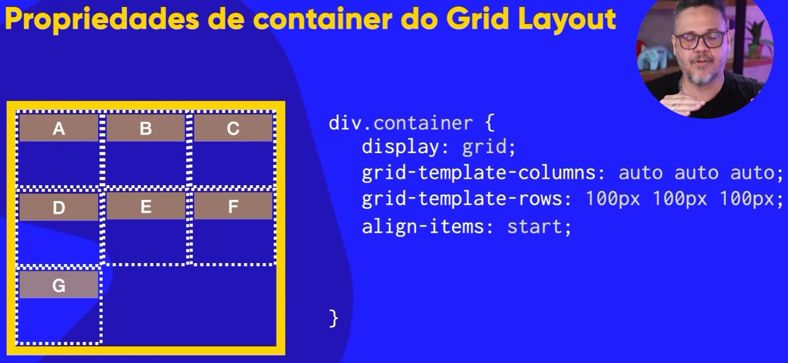
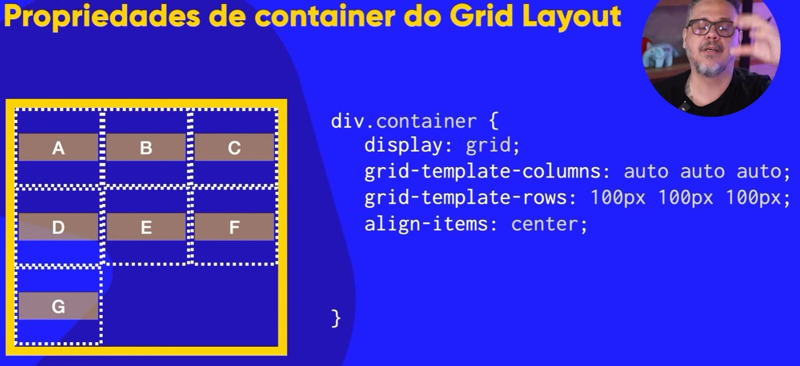
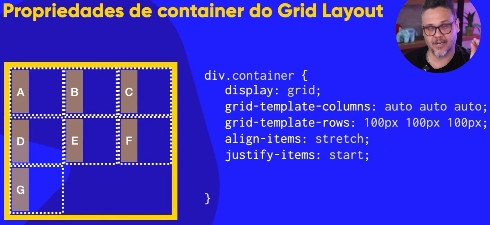
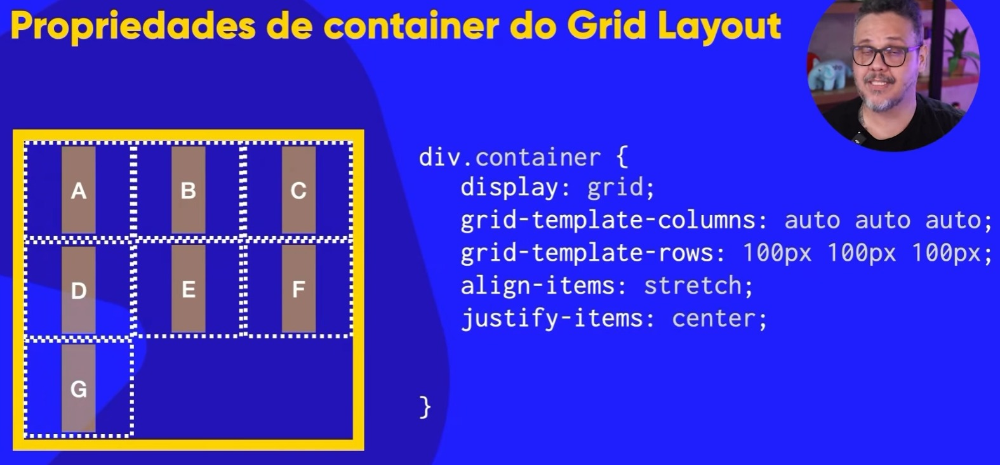
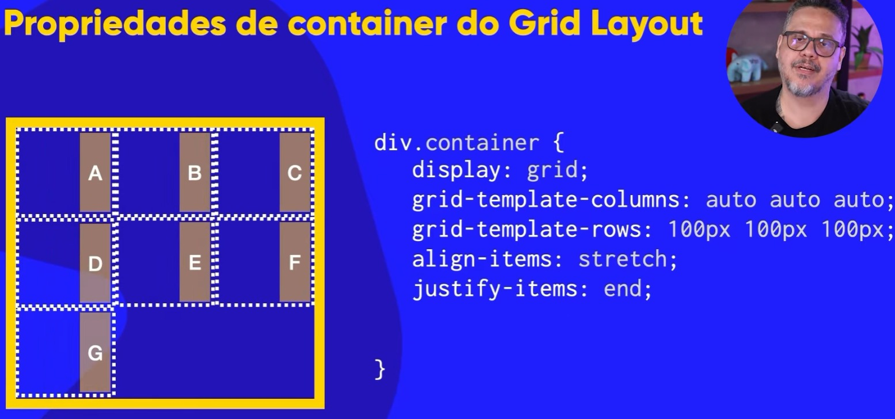

A
B
C
D
E
F
G
Ao usarmos a propriedade grid, o valor padrão para o align-items:" " é stretch.
Ou seja, sempre que usar a propriedade Grid, a propriedade align-items já terá como padrão o valor stretch e por isso ao adicionar os columns e os rows, o item virá esticado
para fazer com que ele caiba dentro da grade(grid).
Lembrando que no GRID, as propriedades align-items e align-content alinham VERTICALMENTE os items!
Eis aqui alguns valores e seus outputs para colocar dentro da propriedade align-items:
start, ele vai pegar todos os items e coloca-los no início. Eis um exemplo: 
center, ele vai pegar os items e centraliza-los verticalmente. Eis um exemplo:

end, os items irão ficar na parte de baixo do container. Ao usarmos a propriedade grid, por padrão, o valor da propriedade justify-content é stretch.
Lembrando que ao usarmos a propriedade justify-content, ele irá alinhar os items na HORIZONTAL!
Agora, vamos aos valores e seus resultados:
start, o item irá ficar no início horizontal. Veja o exemplo: 
center, os items irão obviamente ficar na parte central horizontalmente dentro do container. Eis a imagem de exemplo:

end, como já sabemos, o item irá ficar na parte final horizontalmente. Eis a imagem de exemplo abaixo:
